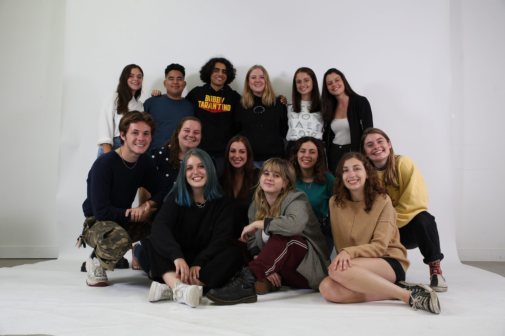
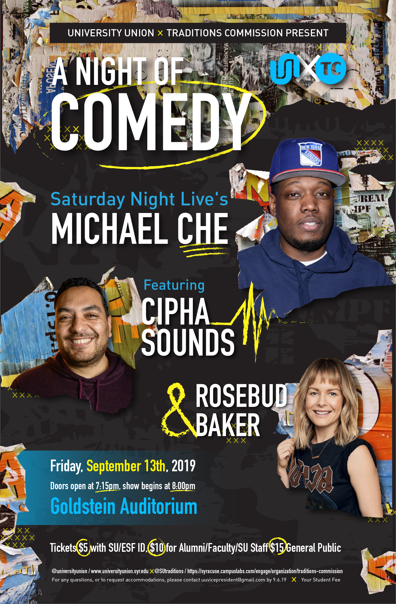
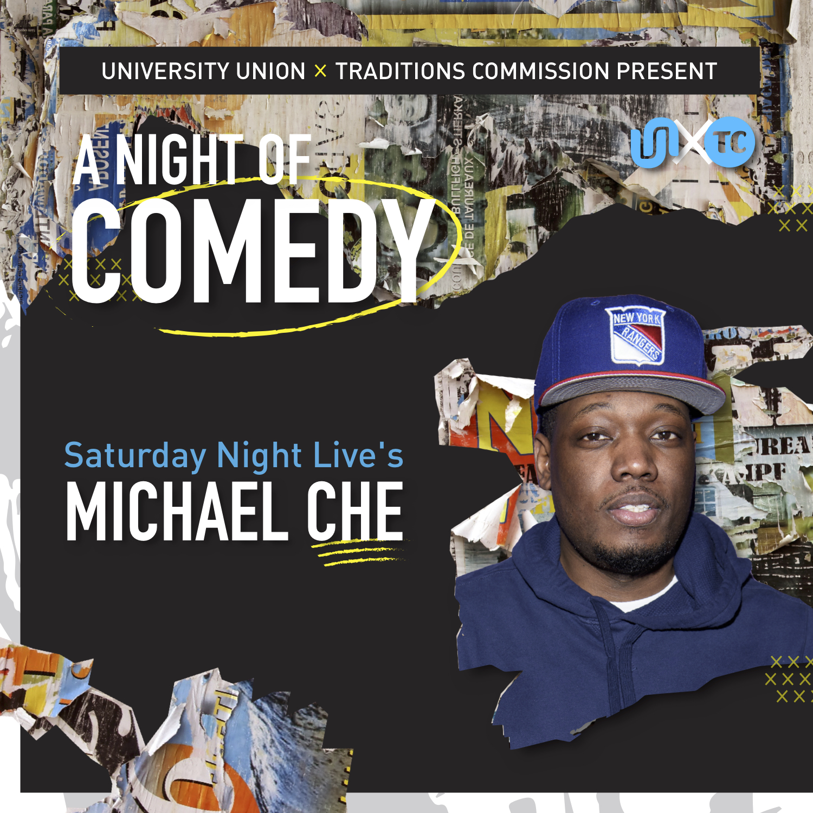
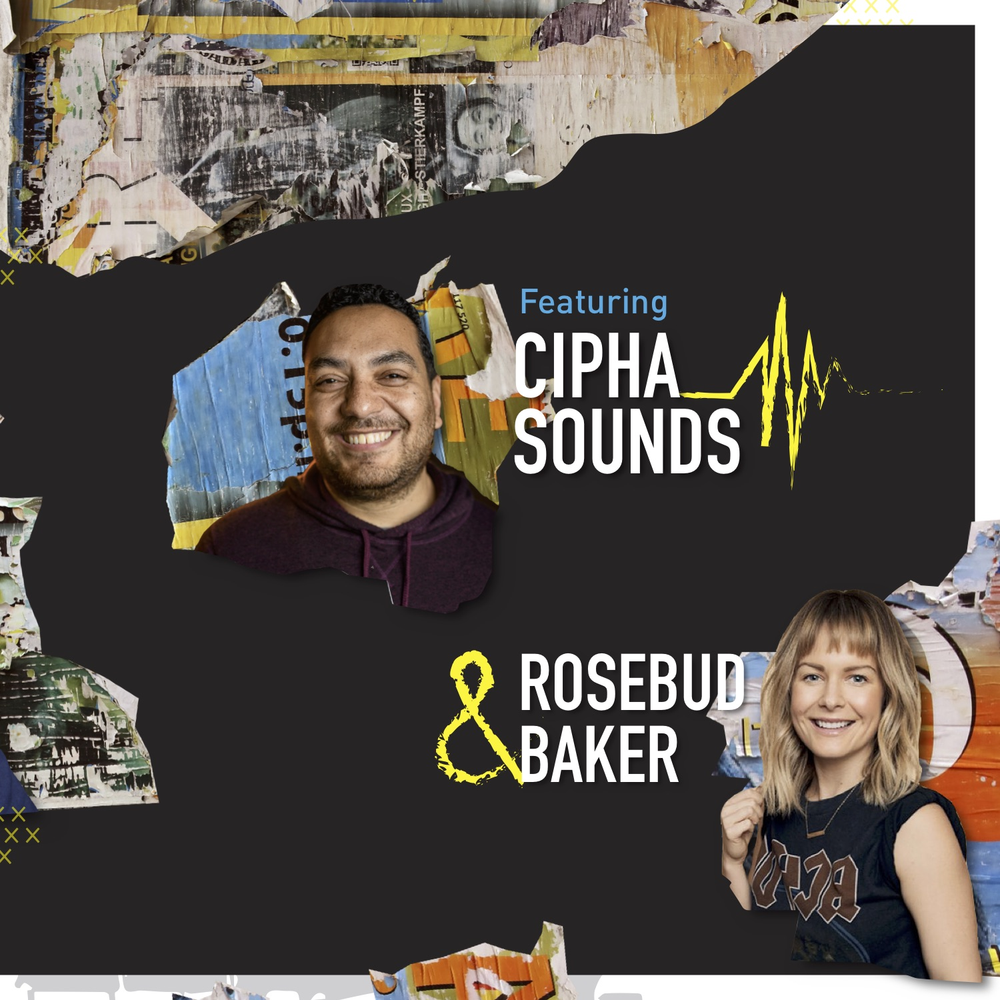

University Union
University Union, or “UU” as we fondly call ourselves, is the official programming board of Syracuse University. We are entirely run by a team of dedicated students and are one of the largest registered student organizations here at SU in terms of budget, membership, and size and frequency of our events. We host large scale concert events including our annual Juice Jam festival in September and Mayfest and Block Party in April. Additionally, we keep campus entertained throughout the year with our smaller Bandersnatch Concert, weekly cinemas screenings, special advanced screening, and events featuring popular comedians and speakers. On the Board, I serve as the Design Director and run a team of 5 designers.
Juice Jam
As the Design Director of University Union, I had the opportunity to develop a brand for our fall music festival, Juice Jam. This year the event featured 21 Savage, Earthgang, Fletcher, Mt. Joy, and Kilo Kish, along with multiple brand activations and a silent disco. Deliverables included the poster itself, many social posts, give away t-shirts and hats, staff shirts, and a snapchat filter. After working on these designs for months, it was incredible to see it all come together the day of the event.



Homecoming Show
As the Design Director of University Union, I had the opportunity to develop a brand for our Homecoming Show, A Night of Comedy. This year the event featured Rosebud Baker, Cipha Sounds, and Micheal Che. Deliverables included the poster itself, many social posts, and give away mugs, After working on these designs for months, it was incredible to see it all come together the day of the event.


